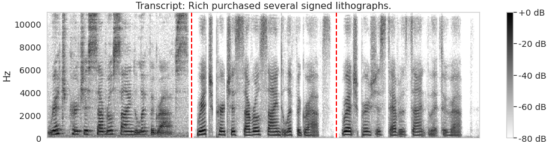
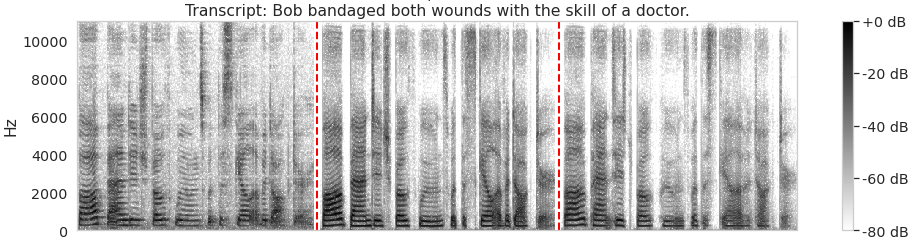
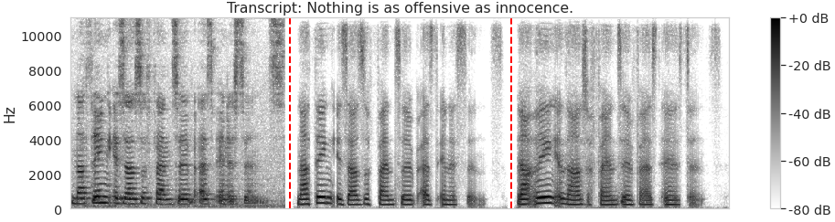

Pipeline Overview
Preprocessing
DC Offset Removal
→
Filtering (10-450Hz)
→
Envelope Extraction
→
Normalization
→
Downsampling (1000Hz)
Feature Extraction
Extract dense phoneme annotation, word onset and offset, segment out sentence based on word onset and offset, extract articulatory space based on audio. We save data in strict CV and non-strict CV mode.
Data Processing
Pad the sentence in same length and record original length. Augment sEMG with random noise and channel masking. Mixup the sEMG and audio.
Model Architecture
Conv+RNN, Conv+Transformer with padding aware training. Map 8 sEMG channels to 14 articulatory space.
Training & Evaluation
Huber and MSE loss combination for articulatory features. Save prediction, resynthesis, and ground-truth audio. Evaluate using PCC and MSE metrics.
sEMG speech decoding demos
Each spectrogram visualization consists of three parts:
Left: Ground truth speech spectrogram
Middle: Spectrogram from speech resynthesis
Right: Spectrogram from sEMG decoded speech

Sample 1
Ground Truth
Resynthesized
Decoded

Sample 2
Ground Truth
Resynthesized
Decoded

Sample 3
Ground Truth
Resynthesized
Decoded

Sample 4